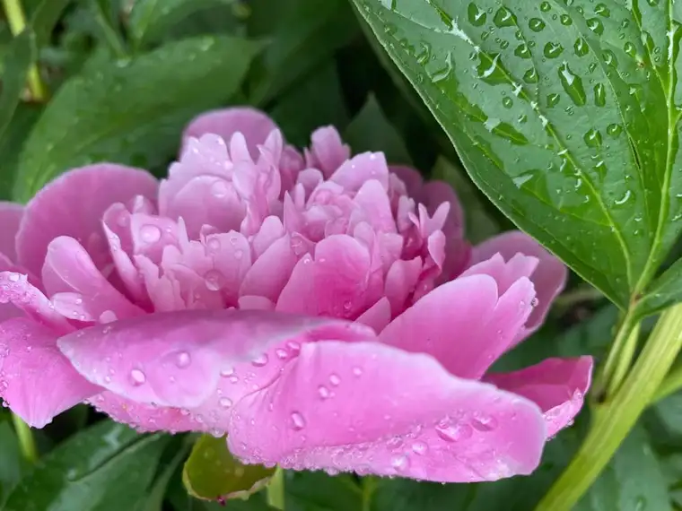
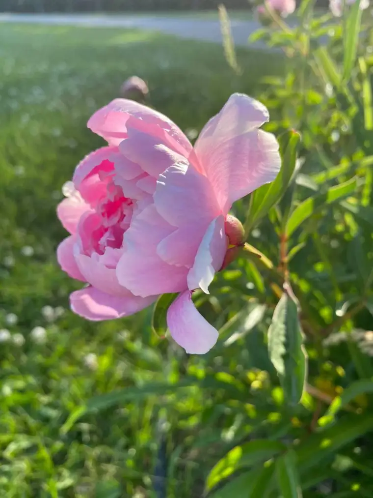
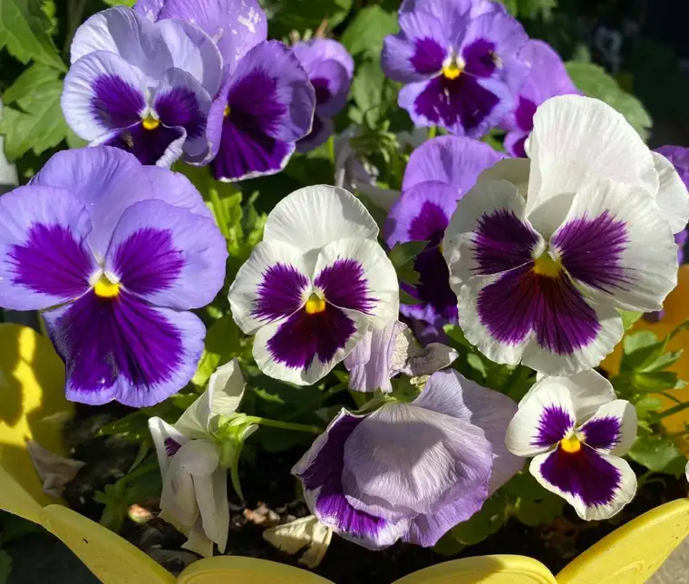
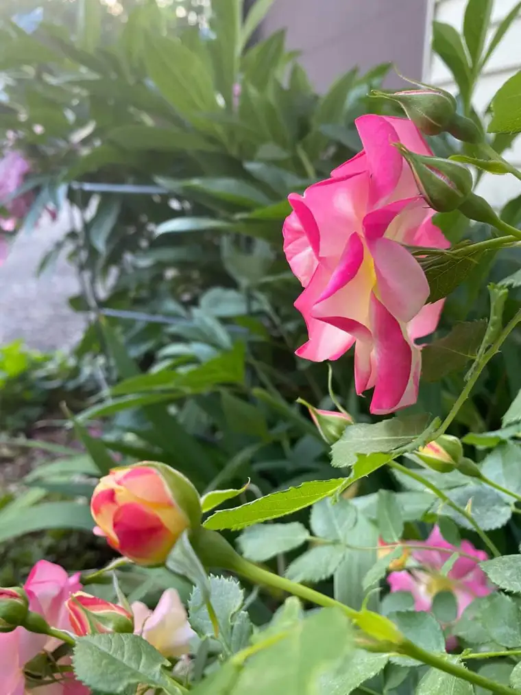
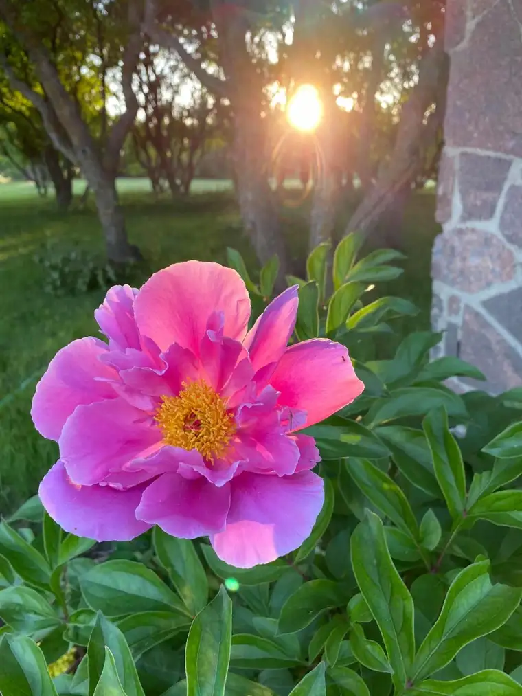
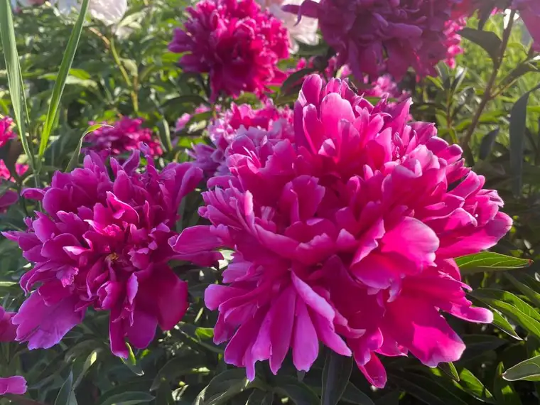
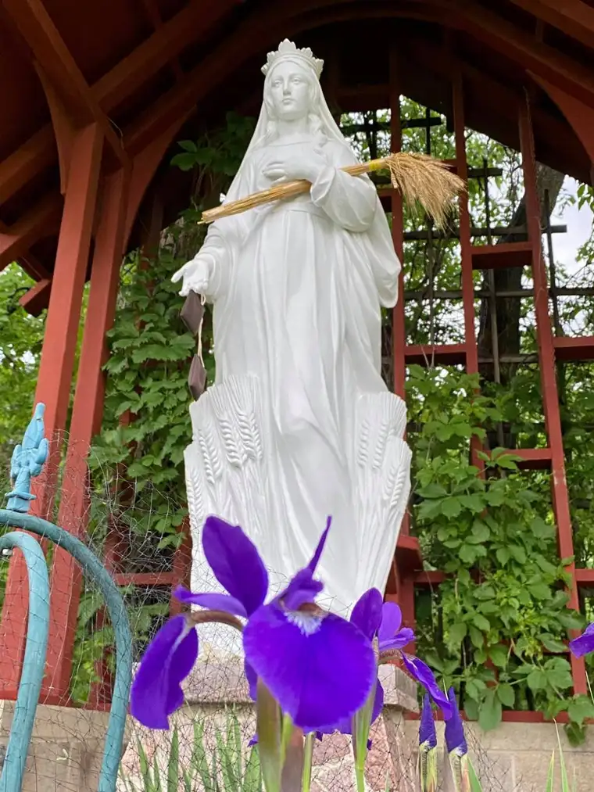
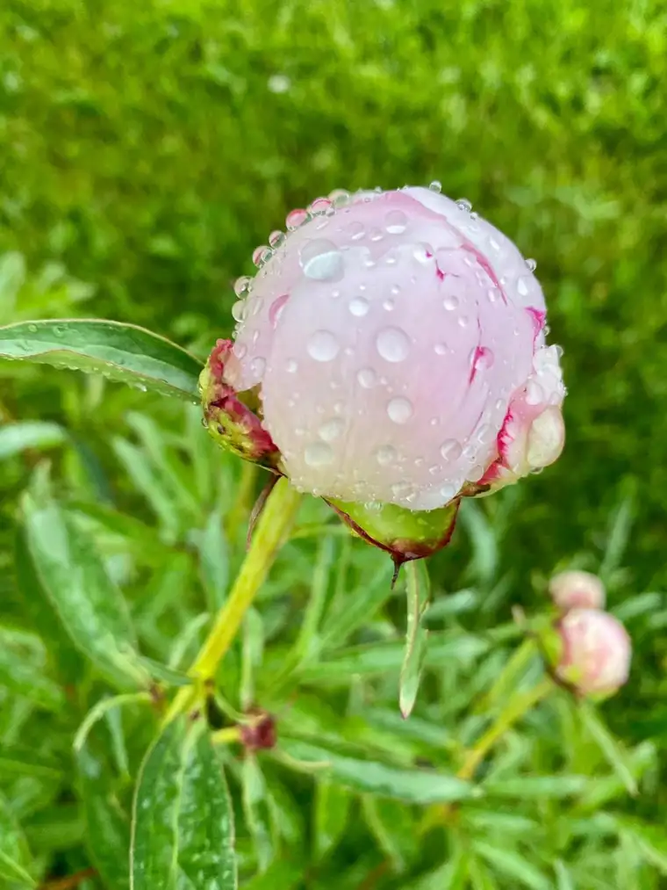
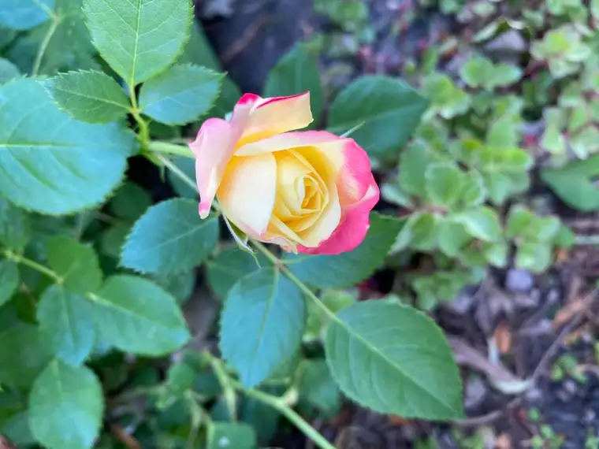

Lately, I’ve been thinking a lot about flowers. Who doesn’t love flowers? They can bring so much happiness to our souls, and perhaps these days, they can remind us of something important — something we need to call to mind more than ever: God’s design for a flourishing world.

My pondering began after a local church here in Fargo, N.D., hosted an online discussion, “Conversation on Racism and Reconciliation.” One of the panelists, a pediatric intensive-care physician who grew up in Nigeria, mentioned a verse she’d memorized at Bible camp as a child, from Psalm 139:14. She quoted, “I praise you, for I am fearfully and wonderfully made.”

She went onto say that our whiteness and our blackness “is a glorifying thing.” Rather than something we should be ashamed of, in other words, our skin color points to the majesty, creativity, and divinity of our Creator. It brings to mind God’s love for each of us.

It was refreshing, even healing, to hear. In the timeframe of the moment, we can easily lose sight of the fact that God looks at each of us without exception as a unique and unrepeatable creation, with an exterior that is, by his own, perfect design, beautiful.

The panelist said whenever she feels judged based on her exterior, it helps her to remember this passage, and, rather than internalize the unjust action or word, to “lay it down at the altar,” and give it to God. “I don’t want the excuse that anger made me act in a way that made me not glorify my Savior,” she explained.
Her presence was so peaceful, and her words, consoling. In the end, the conversation turned into a discussion on our shared humanity — including our tendency to sort and judge, which is, on some level, natural, but if left unchecked, can lead to harmful attitudes and behavior, especially without the vision through which our Lord, Jesus Christ, asks us to consider these things.
I found her suggestion that our skin color “glorifies God” renewing. I thought of the flowers that bring such a richness to my evening walks with family members, all the colorful, exquisite creations that come into view from various directions, and leave me uplifted.

In this, I had the thought: What if God made all the flowers gray? What if every floral looked exactly the same, or had a bland, neutral hue? We would miss out on the beautiful palette God has put together to create his garden! Likewise, if God had made us all the same color — and he could have — we would not have the beauty we do as a human family. Like the colors and fragrances of the flowers, so vastly different, we would lack the richness we find (and perhaps even take for granted) in our variances.

The flowers that adorn our world, especially in this summer season, are part of a spectacular, multi-colored garden that God has planted and fashioned for a purpose. He could have, but he did not, make all his “human flowers” the same. Divine wisdom came into play here, and though we may never know exactly the mind of God, and why he chose this diversity for his human family, this most sublime of gardens, a purpose and a plan exist in this for his glory.

My old minivan used to have a bumper sticker with the Mother Teresa quote: “How can there be too many children? That is like saying there are too many flowers.” Though a slightly different message, it’s one that, again, reveals a profound truth through a simple observation of nature.

You were fearfully and wonderfully made. I was fearfully and wonderfully made. When we tear one another apart by using something that was meant to create beauty for a divisive aim, we cause great sorrow to our Lord.
Today, I commit to seeing the beauty of my own skin color, and that of my neighbor’s, and recognizing that God designed his incredible palette out of love, through and through, and on purpose.

Thank you, Lord, for the diversity that reminds us of your loving attention to detail, and your intentional blueprint of love.
“Friends are like flowers in the garden of life.” May this video of a kindergarten class singing this song leave you with a smile today.
Q4U: Lord, what is it that you want to show me today about the beautiful design you used to fashion me and my neighbor?